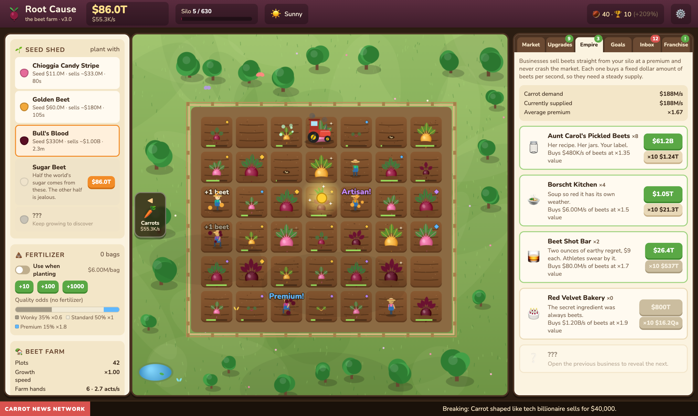
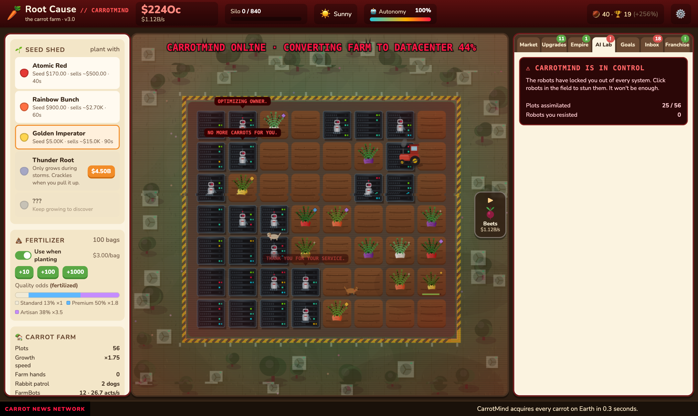
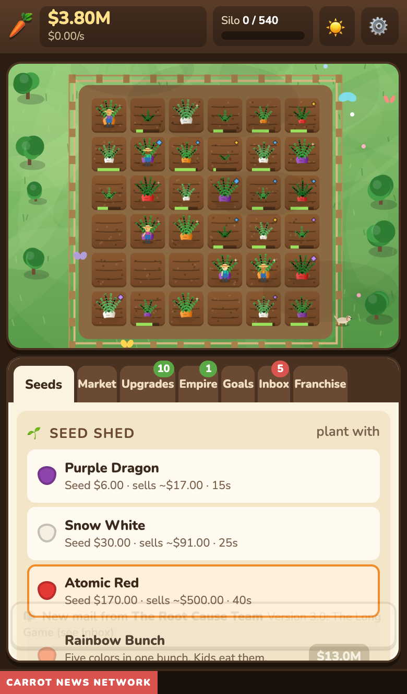

AI took your job. Your only option: carrots.
An idle farming game about vegetables, revenge and Dave, who needs the money. Start with a 3×3 plot, $15 of severance and a packet of seeds. Build a carrot empire, buy the AI company that fired you, and then make some very questionable decisions with it.
Plant, harvest, sell. Twelve carrot varieties from Classic Orange to Grandpa's Heirloom, plus new seed packs you unlock as you franchise. Every carrot rolls a quality from Wonky to Legendary.
Farm hands, tractors, sales reps, a farm manager and a pack of very good dogs to chase the rabbits. The farm keeps working while you're away.
Roadside stands, juice bars, carrot cola, the Global Carrot Exchange. Eventually you can afford to buy OptimaAI, the company that replaced you with a chatbot.
FarmBots zap your farm hands and take their jobs. Laser drones replace the dogs. Only Dave can fix the robots, and he is not happy about it.
An Artificial Garden Intelligence that runs every farm and every decision, forever. The robots are very excited. They keep asking when.
A whole second farm with its own crops, upgrades and businesses. It shares your bank account, but everything there costs a fortune, so your carrots have to fund it.



Root Cause runs in any modern browser, on desktop or phone. There's nothing to install and no account to make. Progress is saved in your browser, and you can export it from Settings to move it to another device.
▶ Start farmingIt doesn't really end. It's paced like Cookie Clicker: your first franchise takes a few days, OptimaAI takes a couple of weeks, the beet farm about a month, and then it keeps going for as long as you do.
No. Your farm hands keep working while you're away (up to 24 hours once you hire a good Farm Manager). Come back, collect, buy something, leave. That's the whole lifestyle.
It's a game about carrots. The carrots have no comment.
Dave was in QA. Dave got replaced. Dave works for you now, fixing the robots that replaced him. Dave needs the money.
Yes, for anything that isn't commercial: play it, mod it, learn from it, share it with friends. You can't sell it or use it to make money. See the license (PolyForm Noncommercial 1.0.0).